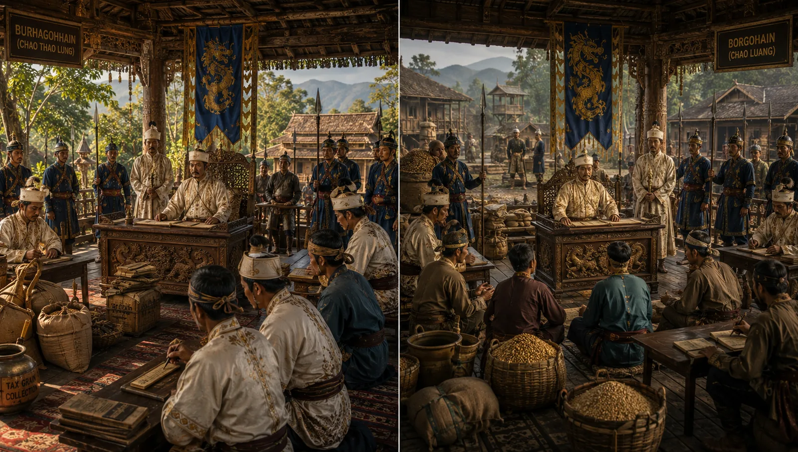

Dual Provincial Governance by Gohains
c. 1283 · The coming of Sukaphaa

Burhagohain administers the northern/eastern territory while Borgohain administers the southern/western territory with autonomous judicial authority.
Sources have not yet been catalogued for this record.
People: Subinphaa